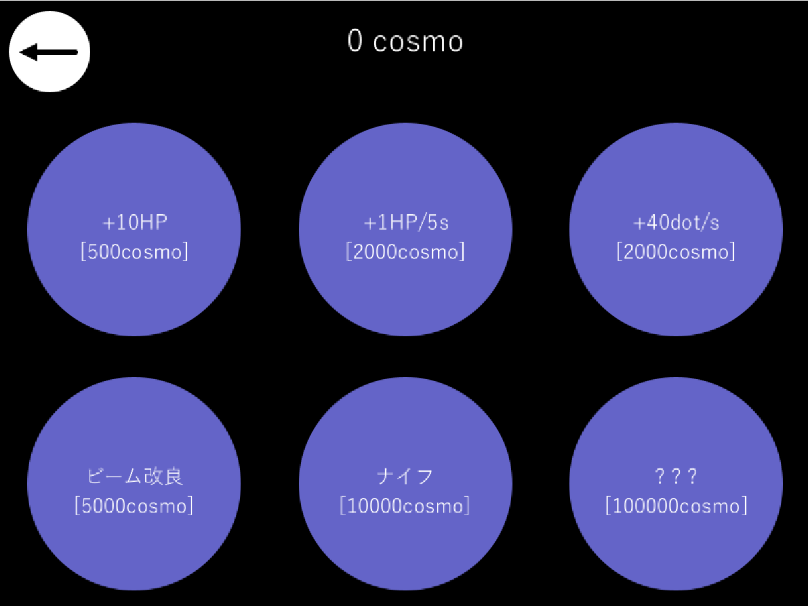
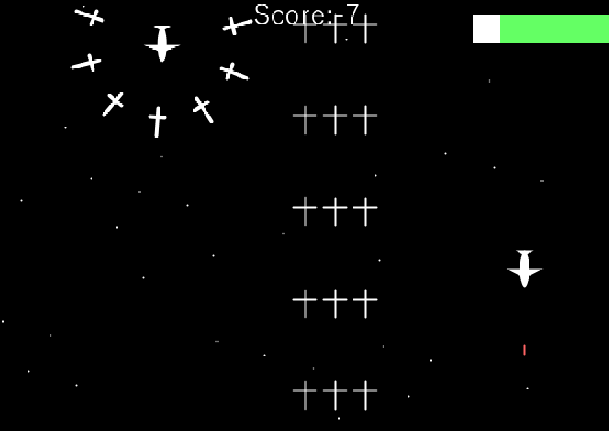

SpaceWarII
作品紹介
スペースインベーダーを元にした2Dシューティングゲームです。
元々Processingで簡易的に作ったゲームでしたが、そこに変更を加え改良しました。
時間経過により難易度が増加し、どこまで生き残れるのか、どれだけ敵を倒せるかが重要になります。

工夫点・技術的特徴
このゲームの特徴はまず、アップグレードの要素があることです。
これにより、ゲームをプレイしてポイントを貯め、アップグレードをして更にゲームを進めるというサイクルが生まれます。
また、ゲーム内の要素も複数用意し、単調さをなくしています。

銃弾を撃つノーマルな敵の他、自爆する敵、剣をまとった敵、回復アイテムを実装し、ランダムに弾幕が降ってくるようにもしました。
ランダムに弾幕が降ってくる際には、その場所が事前に赤く点滅するなどのエフェクトもつけています。
作品リンク
GitHubソースダウンロードページ